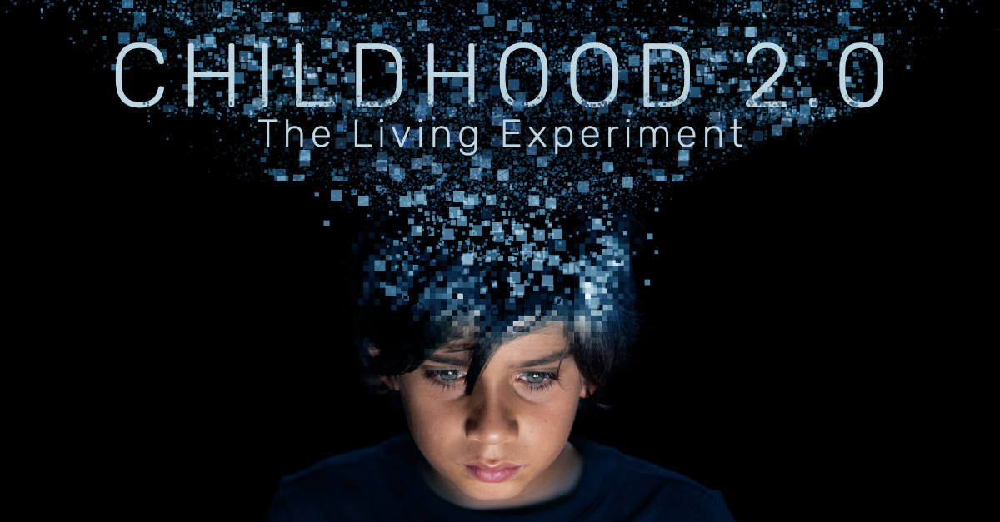

Against commercial Social Media
Why established social media sucks? Please take a look at our collection of articles, documentaries and studies on social media below. Only then decide for yourself, which platform you want to use and why, instead of using something blindly with the only reasoning that others are doing so too and probably without knowing the unavoidable and the potential consequences of doing so.

Articles